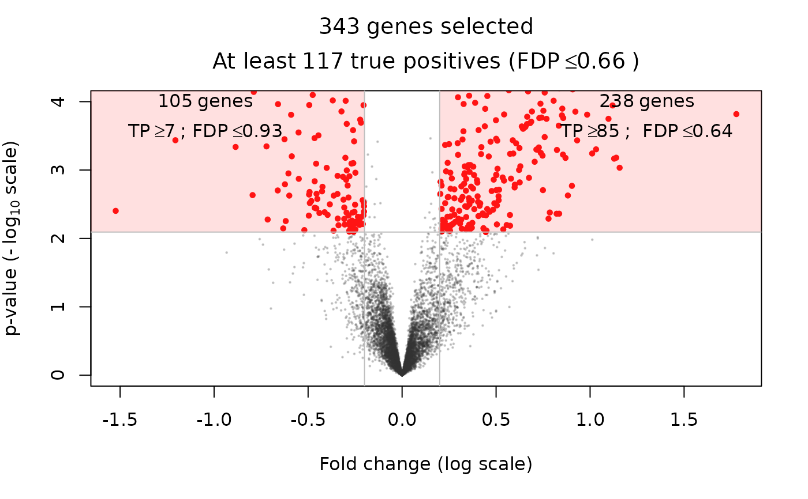

volcanoPlot.RdVolcano plot for differential expression studies
volcanoPlot( X, categ, thr, p = 1, q = 1, r = 0, cex = c(0.2, 0.6), col = c("#33333333", "#FF0000", "#FF666633"), pch = 19, ylim = NULL )
| X | A matrix of \(m\) variables (hypotheses) by \(n\) observations |
|---|---|
| categ | A numeric vector of |
| thr | A numeric vector of length K, a JER controlling family |
| p | A numeric value, the p-value threshold under which genes are selected |
| q | A numeric value, the q-value (or FDR-adjusted p-value) threshold under which genes are selected |
| r | A numeric value, the absolute fold change above which genes are selected |
| cex | A numeric vector of length 2, the relative magnification factor for unselected ( |
| col | A vector of length 3 |
| pch | An integer or single character string specifying the plotting character, see |
| ylim | A numeric vector of length 2, the \(y\) limits of the plot |
The indices of selected genes (returned invisibly)
A Welch T-test of differential expression between the two categories
defined by categ are applied for each gene using the
rowWelchTests function, which also outputs the "fold change"
(mean difference in log scale) between the two categories.
m <- 500 pi0 <- 0.5 m1 <- m-m*pi0 SNR <- 5*(runif(m1)-0.5) sim <- gaussianSamples(m = m, rho = 0.2, n = 100, pi0 = pi0, SNR = SNR, prob = 0.5) X <- sim$X categ <- sim$categ alpha <- 0.2 cal <- calibrateJER(X = X, categ = categ, B = 1e2, alpha = alpha, refFamily="Simes") sel <- volcanoPlot(X = X, categ = categ, thr = cal$thr, q = 0.2, r = 0.2, ylim = c(0, 6))